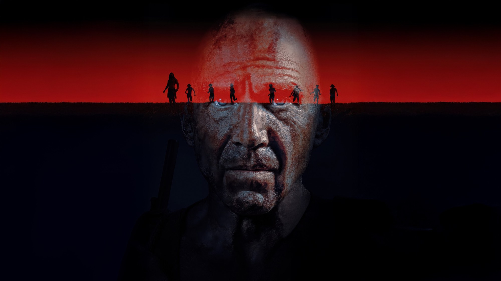
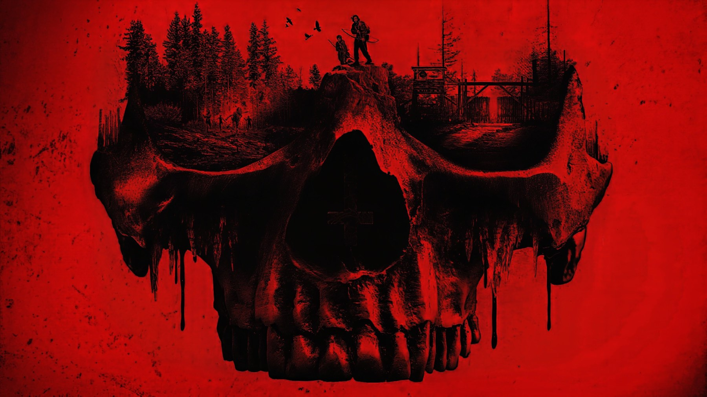
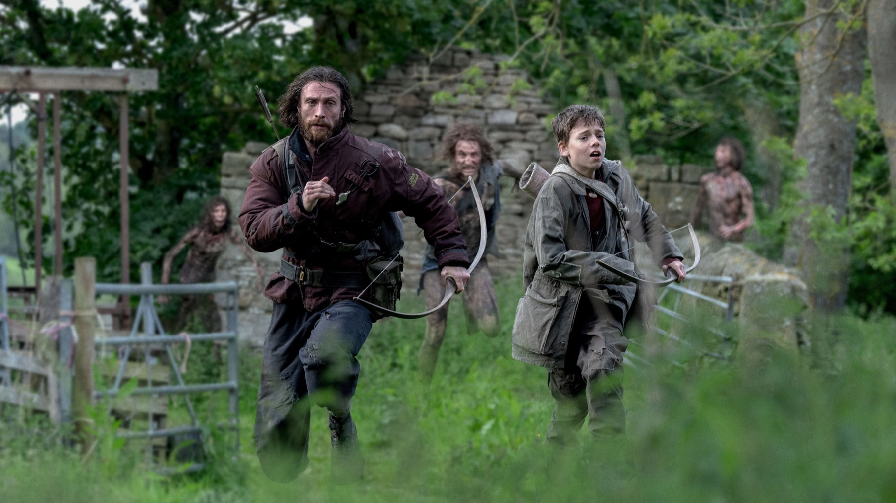

28 anni dopo: la recensione del film di Boyle
Danny Boyle e Alex Garland tornano al virus della rabbia con un film girato in buona parte con un iPhone 15 Pro Max e con un'ambizione più larga dell'horror
Tornare, ventitré anni dopo, a un'opera che ha cambiato il modo di raccontare gli zombi è una scommessa che molti avrebbero evitato. Danny Boyle l'ha accettata insieme ad Alex Garland, lo sceneggiatore del primo capitolo, e ha scelto di non ripetersi: 28 anni dopo parte da una comunità che vive a Lindisfarne, in condizioni quasi preindustriali, e da un bambino di dodici anni, Spike, che sull'isola è cresciuto. Questo basta sapere prima di entrare in sala, perché il resto conviene scoprirlo da soli. E allora la domanda vera diventa un'altra: a che cosa serve tornare, se non per ripetersi?
Un horror girato con un telefono
La notizia che ha fatto più rumore riguarda la macchina da presa. Boyle ha girato in buona parte con uno smartphone, un iPhone 15 Pro Max, insieme a videocamere d'azione e droni, tra il 7 maggio e il 29 luglio 2024 in Northumberland e nello Yorkshire. Alla fotografia è tornato Anthony Dod Mantle, che aveva già lavorato alla serie, quindi lo sguardo resta riconoscibile anche se gli strumenti sono cambiati.
Una scelta così rischia di restare un vezzo da comunicato stampa. Qui però, a nostro giudizio, ha una logica, perché la saga è nata con un'estetica sporca e nervosa, e dei mezzi leggeri permettono di stare addosso ai personaggi e di muoversi in spazi stretti. Resta una scommessa di linguaggio più che di tecnica, quindi va giudicata come tale: sullo schermo grande qualcuno la troverà liberatoria, qualcun altro invece troppo disordinata.

Il cast e dove porta il racconto
Il cast mette al centro Aaron Taylor-Johnson e il giovane Alfie Williams; attorno a loro ci sono Ralph Fiennes e Jodie Comer, oltre a Jack O'Connell. Le interpretazioni sono uno dei motivi per cui il film non resta un esercizio di genere, ma non l'unico: nelle recensioni italiane si legge spesso un'attenzione a temi che vanno oltre il contagio. Su MYmovies un critico lo definisce un film immerso nelle questioni contemporanee, con un'estetica immersiva molto coinvolgente e, proprio per questo, profondamente inquietante.
Condividiamo l'ultima parte di quel giudizio: l'inquietudine nasce meno dai mostri che dal modo in cui il film guarda una società rimasta isolata, e questo lo avvicina più al cinema d'autore che al semplice horror da multisala. Ma è anche il suo limite, perché chi cerca soltanto infetti che corrono potrebbe trovare i momenti di tensione più radi di quanto si aspetta.
Come è stato accolto
L'accoglienza è stata favorevole ma non unanime. A ottobre 2026 Wikipedia riporta l'88% di recensioni positive su Rotten Tomatoes, su 398 critici, e 77 su 100 su Metacritic. Il pubblico americano ha dato al film una B su CinemaScore. Al di là dei voti, però, il dato che conta è che il pubblico ha risposto: a fronte di una spesa di 60 milioni di dollari ha incassato circa 151,3 milioni nel mondo, il risultato più alto della saga; in Italia ne ha raccolti circa 1,6 milioni di euro.
Le pagine italiane di Wikipedia ricordano però anche i dubbi di una parte della critica, che ha trovato qualche incertezza di tono e qualche passaggio narrativo poco compatto. È un'osservazione che sentiamo vicina, perché il film ha idee in abbondanza ma non sempre le tiene tutte nella stessa direzione. Il tono passa dalla tensione dell'inseguimento allo sguardo su una comunità isolata, e chi entra in sala senza saperlo rischia di sentirsi spiazzato.
Una saga che si allarga
28 anni dopo è il primo capitolo di una nuova trilogia. Il seguito, intitolato «Il tempio delle ossa» e diretto da Nia DaCosta, è stato girato subito dopo questo e a gennaio 2026 è arrivato nei cinema. Il film di Boyle è quindi anche un'apertura, e va visto con questo spirito: pone domande e costruisce un mondo, senza chiudere ogni discorso.

Questa scena è un buon esempio di ciò che intendiamo: un campo d'erba, un muro di pietra, due figure in fuga con archi rudimentali. Il paesaggio rurale inglese diventa un luogo ostile invece che un rifugio, e i mezzi leggeri delle riprese servono a tenere la macchina da presa vicina ai corpi che corrono. Un horror che sceglie il verde al posto dei corridoi bui ha già una personalità sua, quindi per noi è tra le cose più convincenti.
Perché il titolo conta
Quel numero non è un vezzo, perché misura una distanza. Dopo un prologo ambientato nel 2002, il racconto salta in avanti di 28 anni e mostra un Regno Unito rimasto in quarantena, con una piccola comunità che vive tra condizioni preindustriali. Il tempo trascorso permette di parlare di ciò che resta di una società dopo molti anni di isolamento, e non soltanto dell'emergenza iniziale, che è il terreno su cui di solito si muovono i film di infetti.
Per un ritorno così tardivo, questo è il vantaggio più grande. Boyle e Garland non devono rifare il primo capitolo né spiegarne i meccanismi, quindi possono partire da un mondo già rotto e chiedersi che cosa ne abbiano fatto i sopravvissuti. È anche il motivo per cui, secondo noi, il film divide: chi si aspetta il ritmo dell'esordio ritrova un racconto più lento e più largo, con un tono che cambia da una parte all'altra.
Dove vederlo e a chi lo consigliamo
A ottobre 2026 il film è in abbonamento su Amazon Prime Video, mentre a noleggio si trova su Apple TV Store o su Rakuten TV. Dura 115 minuti, quindi sta comodo in una serata. Le piattaforme cambiano spesso catalogo, quindi conviene controllare prima di organizzare la serata.
Lo consigliamo a chi ama la saga e vuole vederla cambiare pelle, a chi apprezza i registi che rischiano sul linguaggio e a chi cerca un horror con qualcosa da dire. Chi vuole soprattutto spavento e ritmo, invece, potrebbe uscirne un po' freddo: Boyle e Garland puntano più in alto del brivido, e non sempre ci arrivano.
Domande frequenti
Quando è uscito 28 anni dopo in Italia?
Il 18 giugno 2025 al cinema, distribuito da Eagle Pictures. Nel Regno Unito e negli Stati Uniti è arrivato il 20 giugno 2025.
Bisogna aver visto 28 giorni dopo per capirlo?
Non è indispensabile, perché la storia riparte da un'isola e da personaggi nuovi. Chi conosce i film precedenti, però, riconoscerà il mondo e il tono. La sceneggiatura è di Alex Garland, come per il primo capitolo.
Dove si può vedere in Italia?
A ottobre 2026 è in abbonamento su Amazon Prime Video; chi non è abbonato può invece noleggiarlo, per esempio su Apple TV Store o su Rakuten TV.